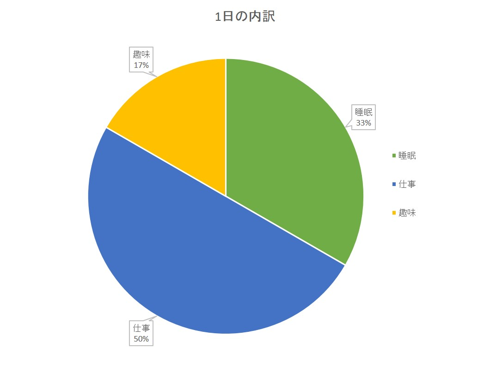

このページでは、2015年度にゼミ内で発表したGoogleChartについての発表をまとめています。
GoogleChartとは、GoogleのAPIを使ったグラフ作成ツールです。
簡単に”Colorful”で”Interactive”なグラフが作れるのが魅力です。
まず、エクセルでグラフを作成するとこのようになります。
GoogleChartで作成するとこのようになります。
上の表は、株式会社バンダイナムコホールディングス2015年3月期決算短信補足資料から抜粋したものです。
この表のの2015年度の上半期実績と通期実績をGoogleChartで描画してみました。
Googleスプレッドシートで作成したグラフを挿入することもできます。
ただし、スプレッドシートを公開する必要があるので注意！！